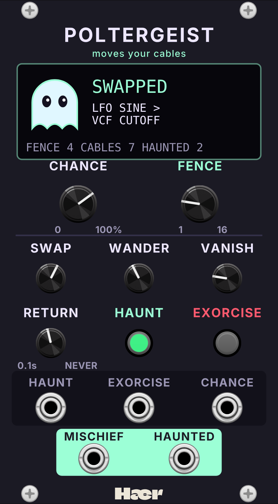

Poltergeist does not make sound. It changes the patch. Every time it is haunted it reaches out of its panel and moves one of the real cables on your screen: it swaps where two cables go, moves one end of a cable to another socket, or pulls a cable out for a while. You see the ghost fly across the rack to the cable it touched.
It is a joke module, but it is also a serious way out of loop fatigue: instead of changing a knob, it changes the wiring, so a loop can turn into a different patch every few bars. When you like what it found, stop the haunting and keep it. When you don't, press EXORCISE and everything goes back.
FENCE (1 to 16) sets how many modules to the right of Poltergeist, on the same row, the ghost may touch. Those modules get a faint mint outline on the rack so you can see the haunted area. Turn the knob and the outline lights up brightly for a couple of seconds.
A cable going out of the fence (to your mixer, to an Audio module, to anything left of Poltergeist or further right) is never touched. So the simplest way to work is: put Poltergeist at the left of a group of modules, and send that group's final output to a mixer outside the fence.
| Control | What it does |
|---|---|
| CHANCE + CV | Chance that a trigger at the HAUNT input does anything (0 to 100%). The CV input adds 0-10 V to the knob. The HAUNT button ignores chance. |
| FENCE | How many modules to the right the ghost may touch (1-16). |
| SWAP | Weight for swapping: two cables exchange their destinations. LFO→cutoff and VCO→VCF in becomes LFO→VCF in and VCO→cutoff. The number of cables stays the same. |
| WANDER | Weight for wandering: one end of one cable moves. Either the plug end moves to a free input in the fence, or the source end moves to another output ("crossed over"). |
| VANISH | Weight for vanishing: a cable is pulled out and comes back after RETURN. |
| RETURN | How long a vanished cable stays away: 0.1 s to 20 s. Fully clockwise = never (until you exorcise). Short values give drop-outs and stutters, long ones give whole sections without that cable. |
| HAUNT button + input | One piece of mischief per trigger (at most one per screen frame; up to 4 queue up). |
| EXORCISE button + input | Undo everything the ghost did, newest first. Cables you have moved yourself since are left alone. |
| MISCHIEF out | A trigger each time a cable actually moves. Use it to fire a fill, a crash, or to reset a sequencer. |
| HAUNTED out | 1 V for every mischief not yet undone, up to 10 V. The patch's "distance from home" as CV. |
The screen shows what the ghost just did and which ports it touched, plus the fence size, how many cables are inside it, and how many changes are still haunted. If it says BORED there are no cables inside the fence; HESITATED means it found nothing it was allowed to move.
Clock divider: one trigger every 8 or 16 bars into HAUNT. CHANCE 50%, SWAP high, WANDER low, VANISH off. Fence round a small voice: two oscillators, a filter, two LFOs and an envelope. The patch gradually rewires itself; HAUNTED rises as it drifts away from home. Patch HAUNTED into a mixer send so the reverb grows as the patch gets stranger, then EXORCISE on the last bar of the section to snap home.
16th-note clock into HAUNT, CHANCE around 10%, VANISH only, RETURN at 0.2-0.5 s. Fence round a drum group (each drum's trigger cable inside the fence, the drum outputs going to a mixer outside). Hits and modulations disappear for a moment and return, like a mute performer with a mind of its own. Turn "Each mischief is a Ctrl+Z step" off for this one.
Long Form or any section clock into HAUNT with CHANCE 100%: every new section the ghost makes one change, so each section is the previous one with one wire moved. MISCHIEF into a cymbal or a riser marks the change. EXORCISE at the start of the final section brings back the opening patch for the outro.
Odds is MIT licensed. Source: github.com/hardyfinn/Odds.